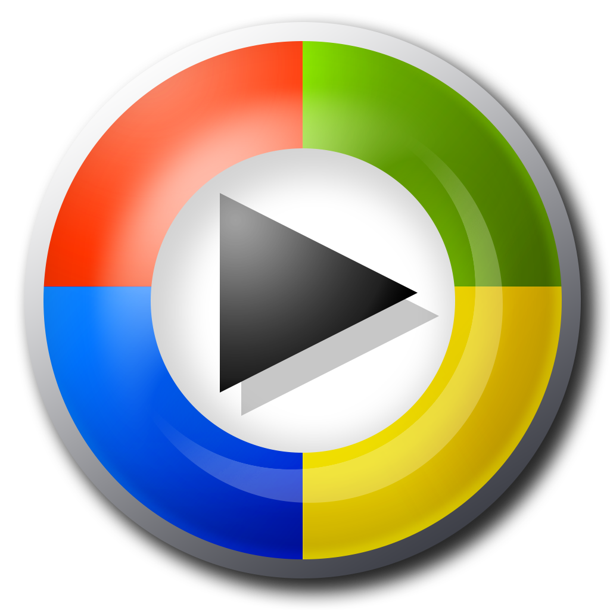
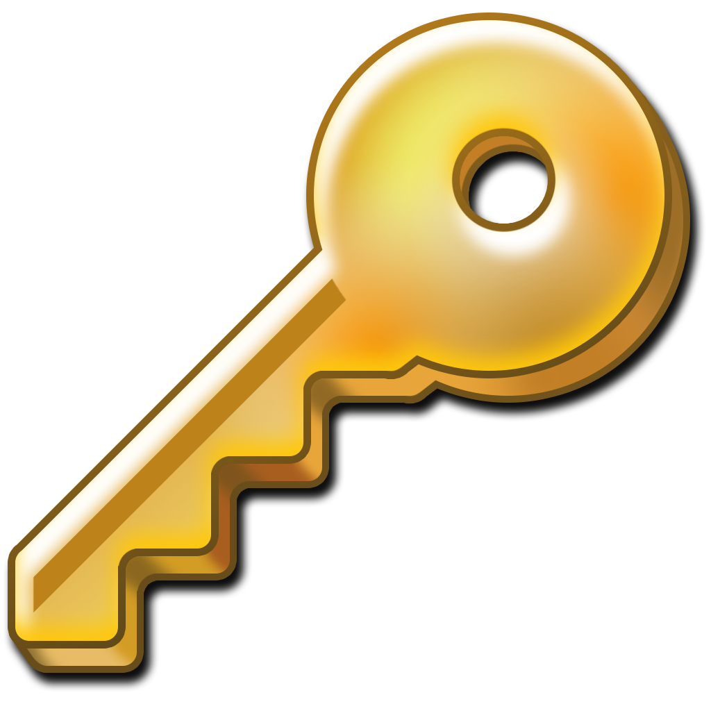
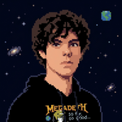
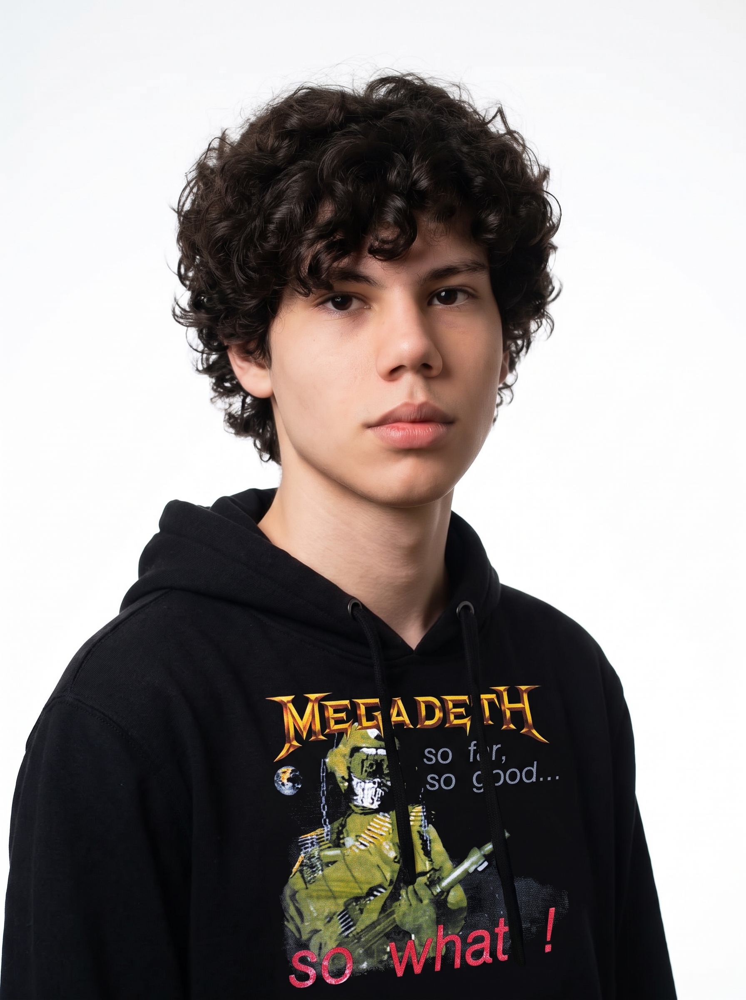
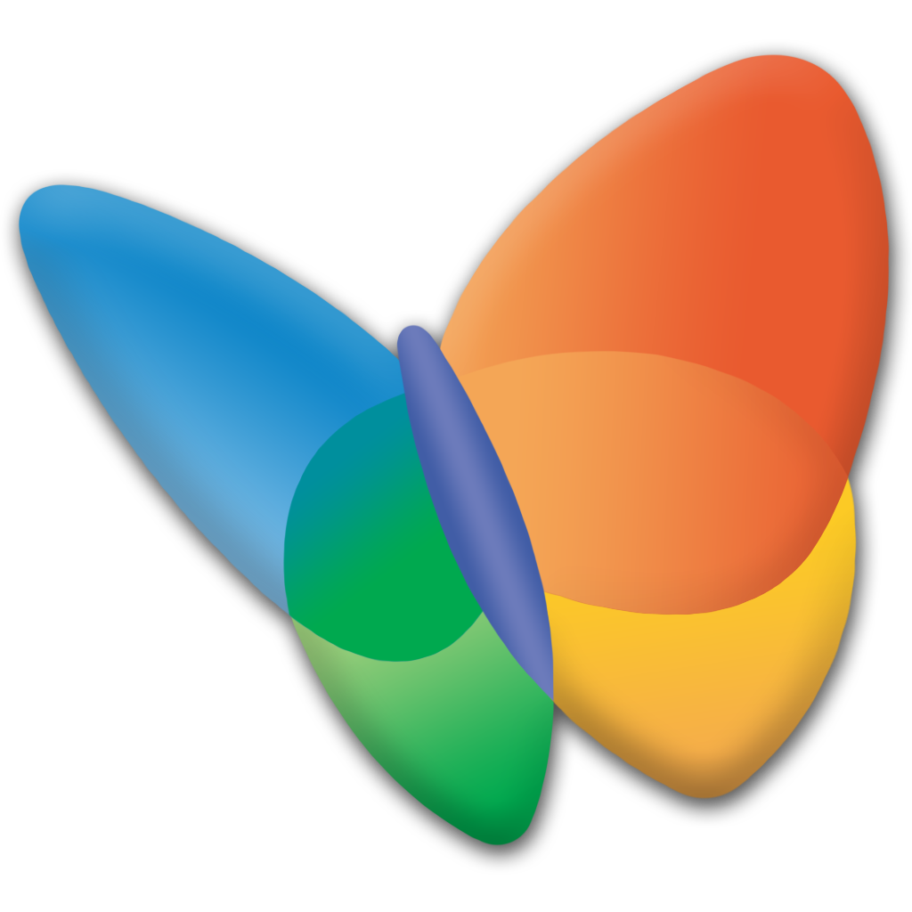
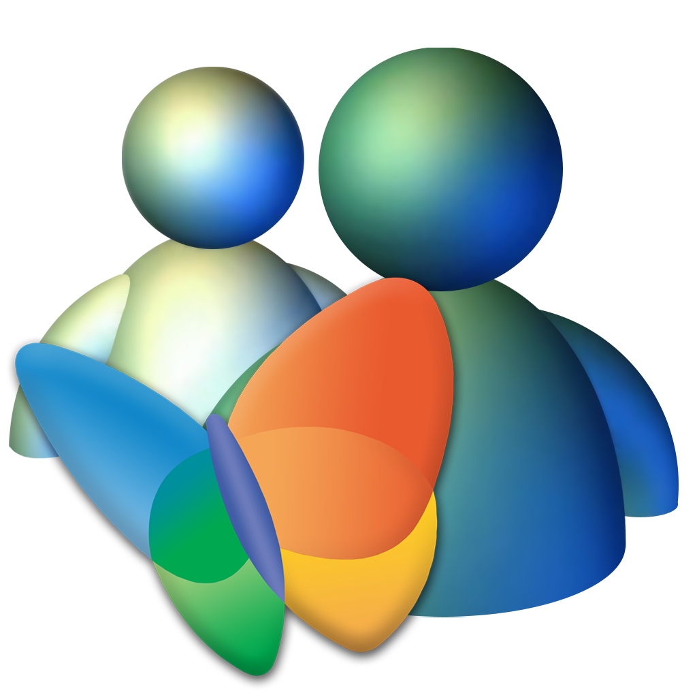

Bill Gates
Social
Startups
De A a Z

Eu Recomendo
Matheus
Referências
💾 Seja bem-vindo ao EmpreendeXP!
Este site é um computador inteiro simulado sobre empreendedorismo. Cada ícone do desktop é um capítulo do trabalho. Explore na ordem ou fora dela!
🗺️ Mapa do sistema
Bill Gates: o nerd que colocou um PC em cada mesa
Antes do meme do “tela azul”, Bill Gates era só um adolescente obcecado por código em Seattle. Aos 13, ele já programava no PDP-10 da escola e pagava o tempo de máquina caçando bugs. Aos 19, largou Harvard para fundar, com Paul Allen, uma empresinha chamada Micro-Soft. Na época, parecia até loucura.
🚀 Sucesso e superação
- 1975: vende o BASIC para o Altair 8800 antes mesmo de ter o produto pronto. Programa em semanas o que prometeu.
- 1980: fecha com a IBM; em vez de vender o DOS, Gates licencia. Cada PC da IBM vendido pagava a Microsoft.
- 1985-1995: Windows 1.0 é zoado, lento e feio. Ele insiste. Windows 95 vende 7 milhões de cópias em 5 semanas.
- Depois do topo: sai do dia a dia da Microsoft e vira o maior filantropo do mundo na Fundação Gates, atacando malária e poliomielite.
🧱 Dificuldades enfrentadas
- Começou sem capital, programando de madrugada e sendo acusado de “vagabundo que largou a faculdade”.
- Concorrência brutal da Apple, IBM e depois do software livre.
- Processo antitruste dos EUA (1998-2001): acusado de monopólio, quase teve a empresa dividida em duas.
- Erros gigantes: subestimou a internet, o mobile e as redes sociais, e admitiu publicamente.
💡 Dicas extraídas da trajetória
🔨 Regras quebradas
- “Diploma primeiro, empresa depois”: ele inverteu.
- “Hardware vale mais que software”: ele provou o contrário nos anos 80.
- “Filantropia é coisa de aposentado”: doou mais de US$ 50 bi ainda ativo.
🏛️ Legado
Popularizou o software como negócio, criou a cultura do PC pessoal e depois redefiniu filantropia com métricas de startup (metas, dados, escala). O legado tem dois tempos: Microsoft (democratizou a computação) e Gates Foundation (mostrou que empreender também é resolver problema social em escala).
🎯 Mercado identificado e proposta de valor
📺 Assista: como ele chegou lá
Vídeo de terceiros incorporado para fins educacionais. Se não carregar, abra aqui.
O que é? Lucro com propósito (de verdade)
Empreendedorismo social é criar um negócio cuja métrica principal de sucesso é o impacto e a receita é o seu combustível, não somente o destino. Diferente de caridade (depende de doação) e de empresa tradicional (depende só de lucro), o negócio social precisa ser financeiramente sustentável E socialmente transformador. Se um dos dois zera, ele morre.
⚙️ Como tem sido aplicado
- Tecnologia assistiva: apps de tradução em Libras, leitores de tela, legendas automáticas (caso HandTalk).
- Educação e favela: cursinhos populares, microcrédito, aceleração de negócios periféricos.
- Saúde e meio ambiente: reciclagem com cooperativas, telemedicina popular, energia solar por assinatura.
🇧🇷 Como o Brasil está?
Otimista, com ressalvas. O Brasil é celeiro de negócio social porque o problema é gigante, e dor grande é oportunidade grande. Temos leis de acessibilidade (LBI), um ecossistema crescente (Artemisia, Yunus, SEBRAE) e cases globais como a HandTalk, de Maceió, premiada pela ONU e pela Apple. Por outro lado, falta capital semente, falta compra governamental e sobra burocracia. Ou seja: criatividade sobra, investimento ainda falta.
🧬 Características de um empreendedor social
- Escuta a comunidade antes de codar;
- Mede impacto (quantas vidas, não só quantos likes);
- Pensa em escala desde o dia 1;
- Equilibra propósito e planilha; romantizar o prejuízo é ruim.
 Desafios
Desafios
- Monetizar sem excluir quem mais precisa;
- Provar impacto para investidores;
- Contratar time diverso e técnico ao mesmo tempo;
- Sobreviver ao “vale da morte” entre o piloto e a escala.
🕳️ Onde o Brasil é ineficiente (e abre brecha)
O que são startups
Startup é uma empresa jovem, inovadora e feita para crescer rápido sob incerteza. É um experimento temporário em busca de um modelo repetível e escalável.
🧪 Como funciona?
- MVP: versão mínima pra testar (a HandTalk começou com um avatar simples);
- Pivot: ajusta rota com feedback real;
- Tração → escala: prova que funciona, automatiza, vende em volume;
- Funding: aceleração, editais, venture capital.
🦄 Exemplos de sucesso (BR no mapa global)
- Nubank: banco digital nascido em SP, hoje gigante global;
- iFood: delivery que virou infraestrutura de restaurantes;
- QuintoAndar, Loft, Hotmart, Wellhub (ex-Gympass): modelos BR testados lá fora;
- HandTalk (Maceió, 2012): fundada por Ronaldo Tenório, Carlos Wanderlan e Thadeu Luz; app lançado em 2013 com os avatares Hugo e Maya.
📊 Tamanho do mercado potencial (HandTalk)
Segundo o IBGE, cerca de 9 milhões de brasileiros têm algum grau de surdez; no mundo, são centenas de milhões de surdos usuários de línguas de sinais. Some a isso a obrigação legal de acessibilidade (LBI: sites, escolas, empresas) e o mercado corporativo de inclusão. A HandTalk já passou de 8 milhões de downloads e 1,3 bilhão de palavras traduzidas, com plugin em mais de 1.000 empresas (Samsung, PwC, Chevrolet, Magazine Luiza, Claro).
Leitura: impacto gigante e gratuito na ponta, conta paga por quem precisa ser acessível. É assim que negócio social escala.

💚 Startup de inovação social: como trabalham?
Atacam um problema que o Estado e o mercado tradicional ignoram, com lógica de startup: produto digital, escala, dados. A HandTalk fez isso com Libras: em vez de “um intérprete por sala”, um avatar para milhões de telas.
🎤 Mini-entrevista (síntese de entrevistas públicas do fundador)
Abaixo, reconstrução autoral a partir de falas públicas de Ronaldo Tenório (CEO).

Conexão seguraCinco arquivos .txt que resumem o que está bombando no mundo do empreendedorismo. Cada um traz definição, tendência e exemplo prático.
Tendência: IA embarcada em tudo: atendimento, acessibilidade (legendas e tradução em Libras em tempo real), programação assistida.
Exemplo: a HandTalk usa IA para o avatar Hugo entender contexto e traduzir com naturalidade.
💬 Discutir: IA vai substituir o empreendedor ou virar o “sócio incansável” dele?
Pra aprender mais: Google for Startups: case HandTalk e IA
Tendência: no-code e IA permitem MVP em dias, não meses.
Exemplo: Gates vendeu o BASIC antes de pronto; a HandTalk lançou o avatar simples antes do 3D atual.
💬 Discutir: quando o MVP é “enxuto” e quando é só “malfeito”?
Pra aprender mais: The Lean Startup, de Eric Ries
Tendência: usado fora do design: em direito, educação e políticas públicas.
Exemplo: em vez de supor o que o surdo quer, a HandTalk conviveu com a comunidade surda (empatia) antes de codar.
💬 Discutir: dá pra aplicar Design Thinking no TCC de Direito?
Pra aprender mais: Stanford d.school: Design Thinking
Tendência: acessibilidade como SEO e como lei: quem não é acessível perde cliente e toma multa.
Exemplo: plugin de Libras em e-commerce aumenta a conversão e cumpre a LBI.
💬 Discutir: inclusão é custo ou vantagem competitiva?
Pra aprender mais: LBI: Planalto • W3C/WAI acessibilidade
Tendência: creator economy e IA: um autor solo publica livro, jogo e curso sem editora.
Exemplo: mestres de RPG vendem campanhas, mapas e sistemas. É empreendedorismo puro de nicho.
💬 Discutir: dá pra viver de RPG/autoria no Brasil? O que falta no ecossistema?
Pra aprender mais: SEBRAE: Economia Criativa
O Jogo da Imitação (2014), sobre Turing
Trailer oficial legendado incorporado para fins educacionais (abrir no YouTube).
O filme conta a história de Alan Turing, o pai da computação, liderando uma equipe secreta para quebrar a Enigma nazista em Bletchley Park. Ele importa para empreendedores por mostrar persistência, inovação sob pressão e liderança de um time diverso.
🤝 O que tem a ver com empreender?
- Persistência sob perseguição: Turing era genial e homossexual num país que criminalizava quem ele era. Continuou mesmo sabendo que o reconhecimento talvez nunca viesse. Empreender também é remar sem plateia.
- Inovação sob restrição extrema: sem verba infinita, sem tempo, com pressão de guerra, ele construiu a Bombe, precursora do computador. Restrição gera criatividade.
- Liderar gente diferente: a equipe era um bando de esquisitos brilhantes. Turing aprende (a duras penas) que ideia boa sem time não descriptografa nada.
- Impacto maior que o lucro: estima-se que quebrar a Enigma encurtou a guerra em anos e salvou milhões. Legado > faturamento.
📌 3 lições pra levar pro pitch
- Proteja a ideia sem esconder o time;
- Meça o impacto em vidas, não só em dinheiro;
- Persevere mesmo quando o “mercado” (ou a sociedade) não te entende ainda.

Matheus Novac
Não tem outro usuário para utilizar.
Sobre mim:
- 🎓 Estudante de Direito, 2º período | FAE São José dos Pinhais
- 💻 Aficionado por TI e programador
- 🐉 Mestre de RPG de mesa
- ✍️ Autor
- 🎂 17 anos

Função no grupo de 1: CEO, CTO, designer, redator, QA e suporte técnico.
Fontes & como este conteúdo foi feito
Todo o texto foi reescrito a partir das fontes abaixo. Números e citações têm link inline nas janelas.
- Bill Gates: vídeo indicado, Microsoft e Gates Foundation;
- HandTalk: site oficial, UOL Ecoa, Startups.com.br, Google for Startups, ONU/WSA e MIT;
- Legal: LBI; Conceitos: Lean Startup, d.school, W3C/WAI, SEBRAE;
- Filme: O Jogo da Imitação (2014, dir. Morten Tyldum). Trailer no YouTube, resenha autoral.
✅ Checklist da P1 (conferido)
- ✔ História de empreendedor (Gates) com os 8 pontos;
- ✔ Empreendedorismo social completo e HandTalk;
- ✔ Startups e HandTalk (foco);
- ✔ 5 conceitos de A a Z;
- ✔ Eu recomendo (filme);
- ✔ Integrante apresentado de forma criativa.
A Lixeira está vazia.
Nenhuma ideia foi jogada fora.
Até as ruins viram MVP.
(mas se clicar aqui mais 3 vezes... algo acontece. Ou não. 👀)


MSN EmpreendedorX
🤟 Oi! Você sabia que eu nasci num hackathon em Alagoas e hoje sou premiada mundial? Clica aqui pra ver meu case!
A problem has been detected and EmpreendeXP has been shut down to prevent damage.
CREATIVITY_OVERLOAD_EXCEPTION
*** Se esta é a primeira vez, parabéns. Se é a segunda, é erro do usuário.
Pressione qualquer lugar para reiniciar o sistema e voltar ao portfólio...
_